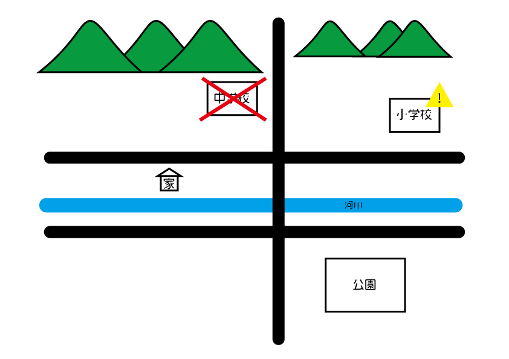

土砂崩れの時はどう逃げる？
土砂崩れが起きた際、一番に考えるべきはそこから離れることです。
避難場所が山のすぐ手前にあった場合、絶対にその避難場所には行ってはいけません。
離れた避難場所に行くべきです。

この場合、中学校のすぐ近くには山があり、とても危険であることがわかります。
実際に中学校の体育館のすぐ裏に山があります。
つまり土砂崩れが起これば体育館は真っ先に被害にあう場所であるとわかりました。
また、小学校は中学校ほどではありませんが、山が近くにあります。
確実に遠くへ避難するのであれば、公園へ避難するのが良いでしょう。

>>トップページ